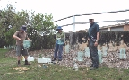
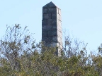
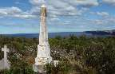
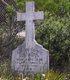
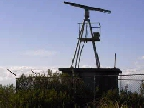
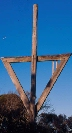
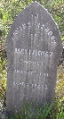

2010 Newsletters
If you would like to receive North Head Sanctuary Foundation newsletters via your email, just ask to be put on the mailing list by contacting:
northhead@fastmail.com.au

Planting degraded area
January/February 2010
Geoff Bailey to speak at 24th Feb meeting, weeding day 7th Feb, Sydney Harbour NP Plan of Management due for comment, tawny frogmouth.

Planting and mulching
March 2010
Geoff Bailey's news, planting report, Profile - Rachel Miller (NPWS ranger), Mystery on North Head - ruined infirmaries - by Geoff Lambert.

Stone Obelisk
April 2010
"Treasuring our Planet" exhibition, planting mulched area, Cabbage Tree Bay Management Plan and special day, awards for two members, Mystery of stone obelisk.
August 2010
AGM speaker - Andy Donnelly, Science Partnerships Director EarthWatch Institute; new card designs; North Head Sanctuary Management Plan; Sunday at the Sanctuary; Working Bee; Siân Waythe profile; 1873 shipwreck on North Head.

Third Cemetery
September 2010
Wildflower walks; Beauty of Biodiversity - art display; Quarantine Station; Year of Biodiversity at Museum; Hospital Picnic Grounds; Third Cemetery.

Grave of Annie Egan
October 2010
New cards available; more plantings; Climate Watch; thanks to those who helped with display for Australian Museum; Quarantine Station talks; Pistol range; 3rd Cemetery with story of Annie Egan; make comment on latest proposals for Quarantine Station.

Radar on North Head
November 2010
Mystery Walk; Seasons Greetings cards; progress of planted area; North Head news; Radar on North Head; Calytrix tetragona; Q-Station lectures; Third Cemetery - the story of George Hammond.


Navigation marker and Third Cemetery
December 2010
Walk led by Geoff Lambert; Thank you to volunteers; Coastal Connections activity; new planting area near Scenic Drive; Ocean Care Day; Indigenous Health talk at Q-Station; Navigation marker mystery; Thysanotus tuberosus; Third Cemetery - the story of James (Jack) Freeman.